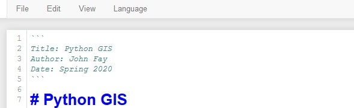
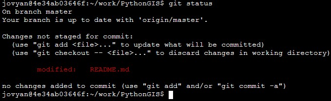
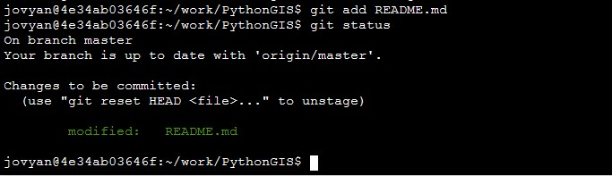
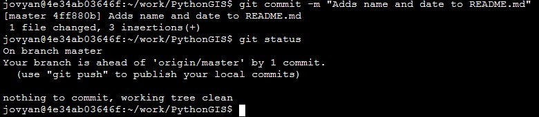
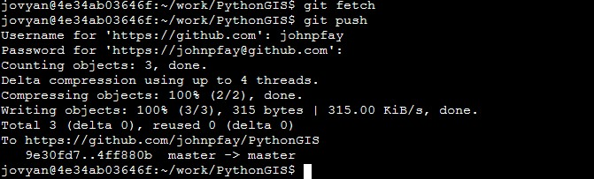

GIS Practicum (Energy): "Learning GIS - an Overview"
Fresh off our first exposure to Python, we now drill into how Python can be used to perform spatial analysis. We again leverage materials from an excellent resource, namely the University of Helsinki's Automating GIS Processes tutorial. Here I outline how we will adapt those materials to our own learning objectives.
Course environment
Continuing with the Dive into Python section we just completed, we will perform all our analysis using Jupyter Notebooks via Duke's Virtual Manager.
- Navigate to the Virtual Manager web site.
- Select ENVIRON859 to log into your virtual environment.
This should bring you to your Jupyter dashboard, listing all your existing Jupyter notebooks and other files.
Course materials
Rather than upload Jupyter notebook files individually, we will pull a set of lesson notebooks into our remote environment using Git and GitHub. Instructions for doing that are listed below. This will allow you to retain your work as well as start using Git/GitHub, which is quite useful if continue on in the coding world.
Setting up GitHub and Git: How it works
A. "Fork" the class PythonGIS repository to your own account
Forking a GitHub repository makes a copy of that repository in your own GitHub account. However, this copy retains a link to the original, or "upstream" repository such that if it changes, you can update your copy to include those changes. Otherwise, your "forked" repository will only track and store changes that you yourself make to files in that "forked repository".
Here we will fork the main
PythonGISrepository located within theDataDevilsGitHub account.
- Log in to your personal GitHub account. If you don't yet have a GitHub account, navigate to https://github.com and create one.
- Navigate to https://github.com/DataDevils/PythonGIS and click the
Forkbutton. This makes a copy of the class materials, stored in your personal GitHub repository. The browser should refresh to take you to the repository web page on your GitHub account.
B. Set up your Jupyter environment for using Git
- Navigate back to your Jupyter dashboard. From the
New ▼dropdown menu, selectTerminal. - At this terminal, we'll type commands to link our GitHub account with our ENV859 virtual environment. At the prompt, type the following commands replacing
my_user_namewith your own GitHub username andme@email.comwith the email associated with your GitHub account.
git config --global user.name my_user_name git config --global user.email me@email.com
C. "Clone" your newly forked PythonGIS repository into your ENVIRON859 environment
First you need to copy the URL associated with your forked GitHub repository, e.g. "https://github.com/johnpfay/PythonGIS"
Then, back in the terminal window, type the following command - using the URL associated with your repository.
xxxxxxxxxxgit clone https://github.com/<your_github_username/PythonGISIf you navigate back to your Jupyter dashboard, you should see a new folder appear called "PythonGIS".
We now have a clone of our remote GitHub repository on our local (virtual) machine. This cloned repository is equipped with all the necessary infrastructure to track changes in any of the files contained within it. This allows us to identify and roll back any edits that we want. Next, we'll look at how this is done. Below is a schematic that might be helpful as we work through the process.
- Making Changes: When we add a new or modify an existing file, the state of our repository has changed and Git is aware of that change (unless we have expressly told Git to ignore a specific file via a
.gitignorefile. )- Staging Changes: If we want Git to record those changes in it's ledger, we first have to "Stage" those changes, done using the
git addcommand. This places the file in the "Staging Area". This means that the modified file is in the active bundle of files that will be tracked in the current session.- Committing changes: At the end of an editing session and added all the files we want to track to the staging area, the next step is to bundle those changes as a single update, or "commit" to our repository. This is done with the
git commitcommand and is accompanied with a brief message related to the changes made. (This message allows us to identify the change in case we want to roll it back...)- Pushing changes: At this point, our local repository is updated with the changes logged in the repository's ledger. But all this is still just on the virtual machine. To upload these changes to our remote GitHub repository, we
pushthose changes up. Once that's done, they are stored in the cloud and we canpullthose changes to any other clones of the repository...This can all be quite much at first glance, so let's run through the process.

D. "Staging", "committing", and "pushing" changes to files in your repository
To see how Git works, you'll edit your README.md file and walk through the steps of committing those changes in Git.
From the Jupyter dashboard, navigate into the Python GIS folder and open up the
Readme.mdfile.Edit the file adding the following 6 lines at the beginning of the file (replacing my name with yours):

Save the file and then close the page in your browser.
In your terminal page, change your active directory to your repository directory by typing the following command:
xxxxxxxxxx cd PythonGIS → Note: if the above fails, try the same command used with the absolute path: cd ~/work/PythonGIS
- Now, we'll check the status of our Git repository:
xxxxxxxxxx git status
The
git statuscommand compares files in our local folder to the registry of files in our repository. By editing our README.md file, the file is now different than the one included in the registry. What we want to do next is to stage these changes.
- Next, we'll "add" the changed Readme.md file to our staging location. Then we'll examine the status.
xxxxxxxxxxgit add README.mdgit status

The
git addcommand "stages" our changes, meaning Git is now paying attention to changes, incremental changes, such that we can roll back some or all of these changes. Staging can be somewhat nuanced and confusing at first; for now just accept that this step is necessary before the next step which is to commit our changes to the repository.
- Next, we'll "commit" the local changes we made to the repository, associating the change with a brief message.
xxxxxxxxxxgit commit -m "Adds name and date to README.md"git status

The
git commitcommand logs changes to our staged files into the repository's registry, with the logged entry associated with the message we provide and a unique log id (called a SHA, pronounced "shah").→ You can type the command
git logorgit log --onelineto review your commit history.The remaining step is to synchronize changes to our local repository, the one we cloned to our ENVIRON859 environment, to our remote repository located on the GitHub cloud. This is done by first fetching any changes to the remote repository (done to identify any conflicts), and then push our changes to the remote repository.
- And finally, we'll push our changes to the remote repository, i.e. the one on the GitHub cloud. (As this is likely the first time you've pushed a commit to your GitHub repository, you'll likely be asked for your GitHub username and password...)
xxxxxxxxxx git fetch git push
The
git pushcommand synchronized your local repository (and its registry) with your cloud-based remote repository. After this step, you can go to your GitHub page and you should see your changes to the README.md file.
It may take some time to get comfortable with Git and GitHub, but it's a useful tool to learn. Our use of Git & GitHub will only use a small portion of its overall capability, but I will allude to other useful features as the class progresses. For now, we've used it primarily to get a copy of the materials we'll use to learn Python & GIS, and we'll review steps to maintain this repository later.
For more information on Git and GitHub refer to this page: https://geo-python.github.io/site/lessons/L2/git-basics.html.
Course format
With our material now copied to our ENVIRON859 environment, we'll now embark on the material, which again will follow the Automating GIS Processes site. That site includes a set of learning goals, listed below (click the lesson number to link to the course site for that lesson):
| Lesson | Learning goals |
|---|---|
| 1. | Shapely and geometric objects (points, lines and polygons) • Have an idea of what kind of tools are available for doing GIS in Python • Understand what kind of geometric objects are available and what they are • Know how to create different kind of geometries using Shapely • Know how to read coordinates from a file and create Points based on those |
| 2. | Managing spatial data with Geopandas (reading and writing data, projections, table joins) • Read and write spatial data from/to common file formats • Manage spatial data using Geopandas • Re-project a geodatafame from one projection to another |
| 3. | Geocoding and spatial queries • Do geocoding, i.e. converting addresses into Points (and vice versa) • Conduct Point in Polygon queries Read data from KML file • Make spatial and table joins between layers • Find the nearest neighbor from Point -objects |
| 4. | Reclassifying data, overlay analysis • Reclassify data based on different criteria (custom or common classifiers) • Do overlay analysis & select data e.g. based on boundaries of another layer • Aggregate data & merge geometric objects together, based on common id • Simplify geometries |
| 5. | Visualization: static and interactive maps • Create a static map with background basemap using Geopandas & contextily • Create a simple interactive map using either Bokeh or Folium (or both) • Share your maps (static / interactive) on the internet using GitHub pages |
| 6. | OpenStreetMap data (osmnx) and Network analysis (networkx) • Retrieve and save data from OpenStreetMap using Python • Extract simple street network properties and statistics • Do simple route optimization using shortest path algorithm in osmnx / networkx |
| 7. | Using Python in QGIS; Raster data processing • Understand the basics of raster data processing using rasterio • Be familiar with Python scripting in QGIS |
What's next?
From here we'll go through select lessons, cherry picking a bit those that have direct utility to our objectives.